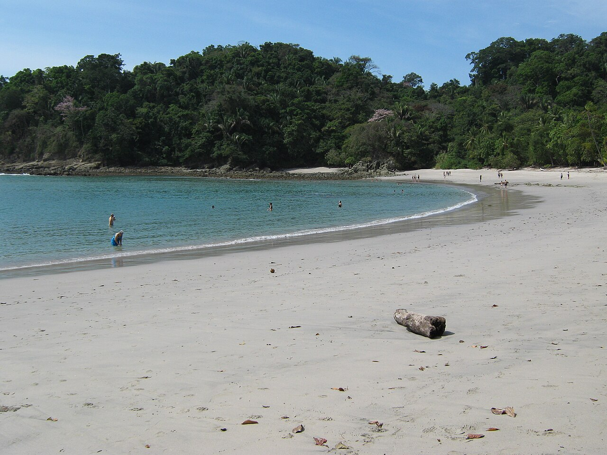

MAPA ECOLÓGICO Y VERTIENTES
Costa Rica51.100 km² de puente biológico custodiados por el SINAC y bañados por dos océanos.

Foto: Wikimedia Commons • CC BY-SA 3.0Parque Nacional Manuel Antonio
Pacífico Central • Biodiversidad CosteraDonde la selva lluviosa besa playas de arena blanca y arrecifes de coral. Refugio vital de monos tití y perezosos.
 Foto: Wikimedia Commons • CC BY-SA 2.5
Foto: Wikimedia Commons • CC BY-SA 2.5
Parque Nacional Tortuguero
Litoral del Caribe • Santuario de TortugasLaberinto fluvial navegable y el mayor epicentro de desove de la tortuga verde marina en el Atlántico occidental.
Vertiente del Caribe
Llanuras y pluviosidad extrema- Lluvia: 3.500 a 5.000 mm/año.
- Ríos: San Juan, Reventazón y Pacuare.
- Bioma: Humedales y selva tropical pluvial.
Vertiente del Pacífico
Costas recortadas y contrastes- Clima: Estación seca y lluviosa marcada.
- Litoral: 1.016 km, mareas y golfos.
- Bioma: Bosque seco (Nicoya) a selva virgen (Osa).
CIENCIA CATIE & SOSTENIBILIDAD
TurrialbaInvestigación científica para producir alimentos sin deforestar la selva tropical.
 Foto: CATIE Comunicación • CC BY-SA 3.0
Foto: CATIE Comunicación • CC BY-SA 3.0
Campus Científico CATIE (Turrialba)
Fundado en 1973 • Posgrado InternacionalCentro hemisférico en agroforestería y cuencas. Forma líderes ambientales de toda América Latina, incluyendo Bolivia.
 Foto: Lcesacom / CATIE • CC BY-SA 3.0
Foto: Lcesacom / CATIE • CC BY-SA 3.0
Colección Viva de Cacao y Café
Bancos de Germoplasma • Seguridad AlimentariaMás de 1.200 clones vivos que resguardan variedades resistentes al cambio climático y garantizan semillas fértiles.
Dosel Superior • Árboles Maderables
Laurel y cedro capturan carbono y amortiguan lluvias.
Estrato Medio • Café y Cacao de Sombra
Maduración lenta bajo dosel; máxima calidad sin agroquímicos.
Suelo Vivo • Cobertura & Cuencas
Leguminosas que fijan nitrógeno natural y cuidan el agua potable.